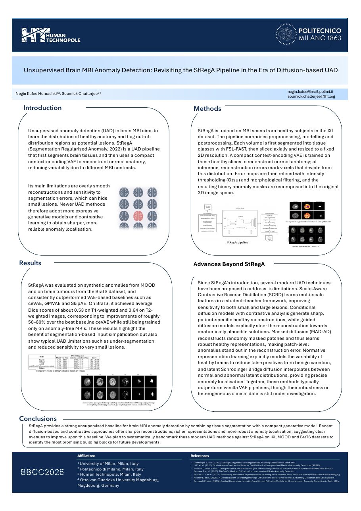

December 2025 · Naples · Poster
BBCC 2025: revisiting StRegA in the era of diffusion-based UAD
Bioinformatics and Computational Biology Conference. Poster: Unsupervised brain MRI anomaly detection: revisiting the StRegA pipeline in the era of diffusion-based UAD.
The question
Can StRegA's tissue-aware input still help when it is combined with the newer generative and contrastive models?
StRegA segments brain tissue with FSL FAST before a compact context-encoding VAE learns healthy anatomy. The simpler input lets a small model do the work, but its reconstructions tend to be over-smooth and can miss small lesions, and errors in the tissue segmentation can hide or misclassify disease. The abstract surveyed what had appeared since: scale-aware contrastive reverse distillation, conditional and guided diffusion models with sharper pseudo-healthy reconstructions, masked diffusion pre-training, and normative modelling of healthy variability. It proposed pairing StRegA's input simplification with these methods and validating the result on three complementary datasets: IXI for healthy anatomy, MOOD for synthetic anomalies and BraTS for real tumours.
Submitted abstract, in short
Unsupervised brain MRI anomaly detection with enhanced StRegA integrating diffusion models, multi-scale distillation and normative representation learning. The abstract set out StRegA's strengths (tissue-segmented input, a compact context-encoding VAE, less reliance on large architectures) and its limits (over-smooth reconstructions, dependence on the tissue segmentation). It argued that the newer methods perform well on benchmark datasets but that their behaviour on varied clinical groups was largely unknown, and proposed testing whether tissue-aware context improves robustness to scanner and anatomical variability when combined with diffusion and contrastive models. The full text is in the PDF below.
